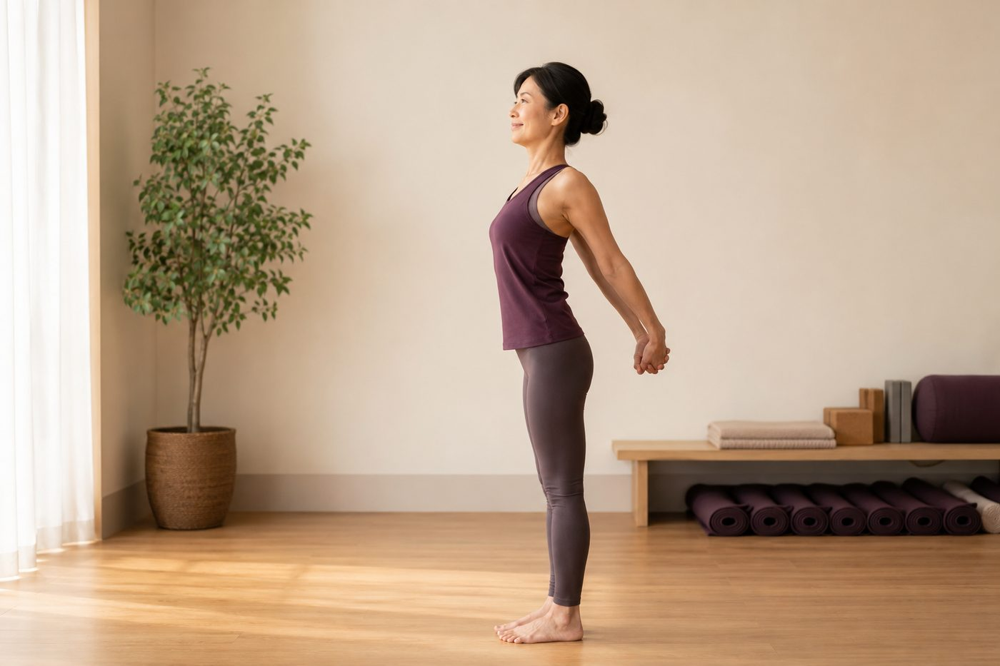

「開胸」到底在開什麼？圓肩族一定要懂

你有沒有被老師說過「肩膀打開、胸口打開」，你也乖乖照做，把肩往後夾得死緊，結果撐沒幾秒就垮回去，肩頸還更痠？先別怪自己不夠努力。「開胸」真正要開的地方，跟大多數人以為的，其實不太一樣。
「開胸」開的不是背，是胸前那一整片
一聽到開胸，很多人直覺就是「把背挺起來、肩胛往中間夾」。但開胸真正要處理的，是身體前側：長期被縮短的胸大肌、胸小肌，還有肩膀前側（三角肌前束）這一整片軟組織，再加上背後中段那截卡住的胸椎。
這裡要先分清楚兩塊肌肉。胸大肌是覆蓋在胸口的大片扇形肌，一路連到上臂，它一緊，會把整條手臂往前拉。胸小肌比較小、藏在胸大肌底下，從上面幾根肋骨連到肩胛骨前面的喙突。別小看這塊小肌肉——它就是圓肩看起來「肩膀往前掉」的幕後推手。當胸小肌長期縮短，它會把肩胛骨往前、往下拉扯，讓你的肩頭整個捲向前。你以為肩膀是被「背拉不住」才垮的，其實是被「胸前拉走」的。
為什麼「用力把肩往後夾」反而更累
這就要講到最常見的那個誤會了。當你硬把肩往後夾，你是在叫菱形肌、中下斜方肌用力，把肩胛骨往脊椎收。但如果前面的胸小肌、胸大肌還是緊的、胸椎還是彎的，你等於一腳踩油門、一腳踩剎車——後側拚命拉，前側死死拽住，兩邊在拔河。
結果就是：撐不久，而且很容易換上斜方肌（脖子側邊那條）跳出來代償收尾。於是你越認真「開胸」，肩頸越緊、越痠。問題從來不是你力氣不夠，是方向反了。
開胸不是把肩膀往後「夾」出來，是把胸前的緊「還」回去——前側一鬆，肩胛自然就回位了。
胸椎，才是那個被大家忘記的關鍵
還有一段常被漏掉：胸椎。我們駝背、低頭滑手機、久坐打電腦，胸椎長期停在「屈曲」（往前彎）的位置。胸椎本來就該保有一定的伸展活動度，但久久不動，它就像生鏽的關節，慢慢卡住、抬不起來。這時候就算你把胸前都放鬆了，胸口還是打不開，因為背後那截脊椎自己延展不出去。
所以，真正的開胸，其實是同時把這三件事養回來：
- 胸大肌、胸小肌與肩前側的長度——把被縮短的前側重新拉回原本該有的長度。
- 胸椎的伸展活動度——讓中背重新能挺、能延展，不再卡在駝的位置。
- 肩胛骨在肋廓上「回家」的位置——注意，是放回去、不是夾過去。
換句話說，開胸不是一個要你出力擺出來的「姿勢」，而是重新給胸口和胸椎「空間」，肩胛才回得去。這也是為什麼開胸常常得先從放鬆胸前開始——想更深入這件事，可以接著看胸口打不開，多半不是背的問題，是胸前太緊；如果你也有整天肩膀往前掉的困擾，認識上交叉症候群會幫你把整個姿勢連動看清楚。
壁繩在這裡幫的忙很實在：你可以把手搭上繩子、身體順勢往前或往後帶，讓繩子接住你一部分體重，胸前在有支撐、不用自己硬撐的狀態下慢慢延展，胸椎也能借著繩子的力量一節一節找回伸展。身體一旦感覺「有人接住我」，前側那股防衛的緊繃才會放掉，開胸也才真的開得進去。
先看清楚你的胸口，是「前緊」還是「胸椎卡」
現場的 AI 體態檢測會拍下你的側面線條，讓你直接看見肩膀往前掉了多少、胸椎彎了多少，知道自己該先鬆哪裡，而不是盲目夾肩、白費力氣。
預約首次 NT$199 AI 體態檢測今天可以先記住的一件事
開胸，開的不是背，是把胸前還回去、把胸椎的空間找回來——肩胛不是靠夾，是靠前側鬆開後自己歸位。
在家你可以先試一個小動作：站在門框旁，手扶著門框、手肘微彎，身體慢慢往前帶一點，感覺胸前被溫和地拉開（是拉開，不是拉到痛），同時配幾個深呼吸，讓肋廓也跟著打開。一次停 20 到 30 秒，一天做個幾回就好。要誠實提醒你：縮了很久的前側不會一次就鬆，圓肩也不是上一堂課就回正，它是每天一點點、循序把長度和活動度慢慢養回來的過程。給自己一點時間，方向對了，身體會慢慢跟上。
本頁為體態與姿勢的一般衛教與練習分享，非醫療診斷或治療。若有疼痛、舊傷或特殊病史，請先諮詢合格醫療專業人員。